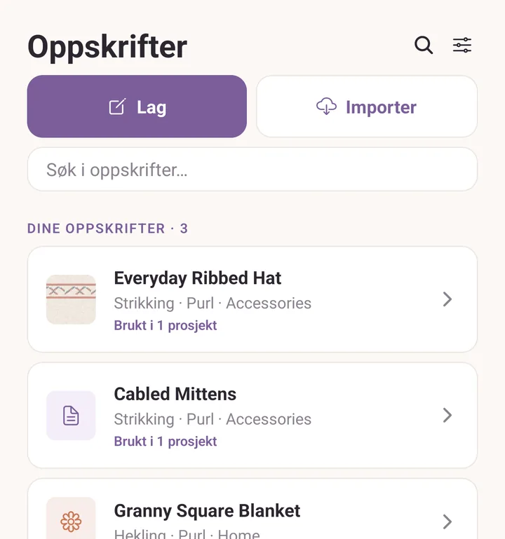
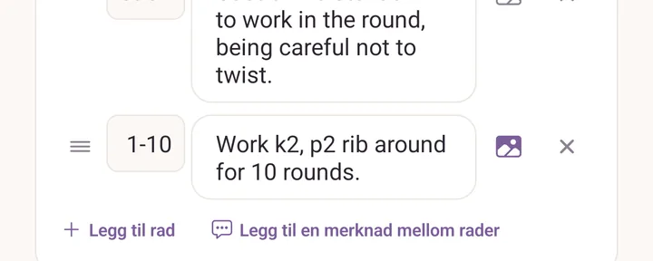
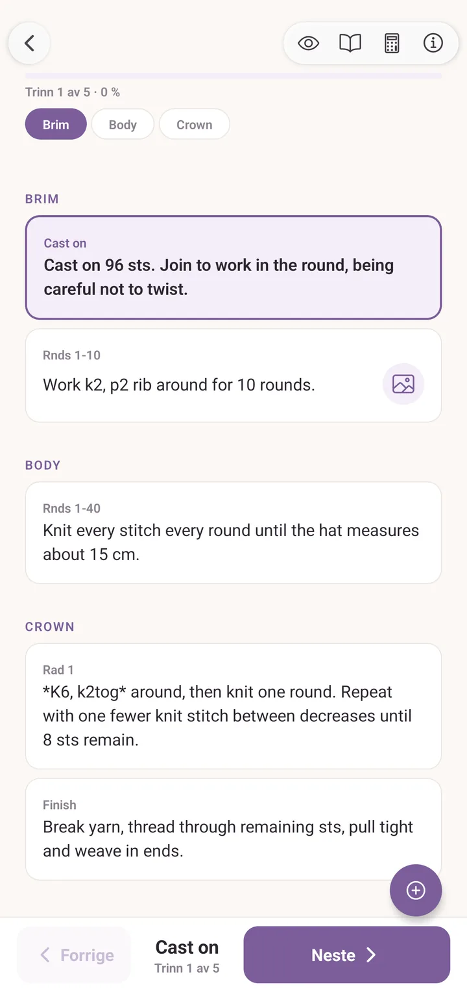

Oppskrifter
To slag: PDF-oppskrifter du har kjøpt eller lastet ned, og skrevne oppskrifter du taster inn selv. Begge bor i Oppskrifter-fanen, begge kan henges på et prosjekt, og begge har en lesemodus som holder plassen din.
Importere en PDF
Trykk Oppskrifter, så Importer, og velg en PDF fra hvor som helst enheten din når: Nedlastinger, Drive, Filer, iCloud. Purl kopierer den inn i sitt eget lager, så du kan slette originalen.
Du kan også sende en PDF inn i Purl fra en annen app. På iPad og iPhone åpner du den i Bøker, Filer, Mail eller Safari, trykker på delingsknappen og velger Purl. På Android åpner du den fra Gmail, Drive eller en filbehandler og velger Purl under Åpne med.
Velger du noe som ikke er en oppskrift, sier Purl fra i stedet for å legge inn et ødelagt kort. Gir du den en sikkerhetskopifil, svarer den Noen filer ble hoppet over, og sier at du skal bruke Eksport og import i Mer-fanen i stedet.
Første gang du åpner en PDF, tegner Purl et miniatyrbilde av side 1 til forsiden. Du kan bytte det ut med hvilket som helst bilde: trykk på oppskriften, trykk Rediger, og så Bilde i Oppskriftsdetaljer.

PDF-leseren
Trykk på en PDF-oppskrift for å åpne den. Den runde flytende knappen vifter ut åtte verktøy: Tellere, Radmarkør, Marker, Bokmerker, Kalkulator, Terminologi, Finn og naviger og Fest et utsnitt. Penn, tusj og linjal ligger inne i Marker, og notatlapper ligger inne i Bokmerker.
Bla med fingeren, knip for å zoome, trippeltrykk for å stille zoomen tilbake. Tegningene, notatene, tellerne og leseposisjonen din lagres underveis, så du lander der du var flere dager senere.
PDF-verktøy er dypdykket, og Les en oppskrift går gjennom det hele én gang.
På en iPad
Gi Purl en skjerm bredere enn omtrent en stor telefon på tvers, så deler Oppskrifter-fanen seg i to: listen til venstre, detaljene til den valgte oppskriften til høyre. Å trykke på et kort fyller ruten til høyre i stedet for å skyve fram et nytt skjermbilde, og det er derfor det ikke ser ut som noe åpner seg før du ser bortover. Telefoner står i stående visning med mindre du slår på Tillat rotasjon under Visning i Innstillinger.
På et nettbrett åpner oppskriften seg ved siden av listen, ikke oppå den.
Skrive din egen oppskrift
Trykk Oppskrifter, og så Lag. Redigeringen er bygget av deler og radene inne i dem:
- En del er en bolk som "Vrangbord", "Bol" eller "Erme".
- En rad inne i den er én instruksjon. Gi den en merkelapp, som regel radnummeret, og teksten.
Legg til en merknad mellom rader legger inn en linje som ikke er en rad: en advarsel om neste felling, en påminnelse om å prøve plagget. Den får sin egen linje i leseren og telles aldri som et trinn.
Hold inne og dra håndtaket til venstre for en rad for å flytte den. Både rader og deler flyttes om på den måten, så en glemt rad betyr ikke at du må taste resten på nytt.
De andre feltene: tittel, designer (som fylles ut fra oppskrifter du allerede har), håndverk, bilde, kategori og mappe, pluss fritekstfeltene Strikkefasthet, Størrelser, Materialer og Notater, og Forkortelser, din egen ordliste for denne oppskriften.
Et bilde til en rad
Hver rad har en liten bildeknapp. Trykk på den for å åpne Bilder for denne raden, og enten legg til et bilde eller trykk på et som allerede ligger i oppskriftens galleri og velg Vis på denne raden. Et bildeikon dukker da opp ved siden av den raden mens du leser eller sporer oppskriften, og trykker du på det, vises bildet. Fin til "slik skal sammenføyningen se ut".

Garnmengde, og stashen din
Under Garnmengde legger du inn én oppføring per farge oppskriften trenger: en merkelapp som Hovedfarge eller Kontrast, eventuelt et navngitt garn, og meter og gram. Fyll dem ut, så dukker Velg garn fra stashen opp på oppskriften, og åpner Garn for denne oppskriften: det du allerede eier, rangert mot hvert behov, med det beste valget først. Uten mengdene holder knappen seg skjult, fordi det ikke er noe presist å måle mot.
Se Stash for å få garn inn der i utgangspunktet.
Diagrammer i en oppskrift
En skrevet oppskrift kan bære fargediagrammer. I redigeringen åpner Legg til diagram diagramverkstedet så du kan tegne et, og Legg til et eksisterende diagram henter inn et du har laget fra før. Et bilde kan også bli et diagram. Diagramverkstedet har sin egen side: Diagramverksted.
Når en oppskrift bærer diagrammer, dukker en rutenettknapp opp øverst til høyre i leseren. Trykk på den for å følge diagrammet maske for maske: pilene går maske og rad, avlesningen viser hvor du er, og en forhåndsvisningsknapp viser diagrammet som strikket stoff. På et diagram med ruter merket som ingen maske teller avlesningen også den raden, og leser M4 av 7, så du kan sjekke en formet rad mens du arbeider den.
Et diagram kan være hele oppskriften. Heng det på et prosjekt og spor det rett derfra, helt uten skrevne rader.
Lese en skrevet oppskrift
Trykk på en skrevet oppskrift fra Oppskrifter-fanen, så åpner den seg i lesemodus: bare blaing, fint til å skumme. Trykk på øyet øverst til høyre, merket Vis sporing, for å begynne å spore. Sporingen markerer raden du er på, Neste merker den som gjort og går videre, Forrige går et skritt tilbake, og linjen teller Trinn 4 av 60 med en prosent. Den samme knappen, nå Lesemodus, går tilbake til blaing. Åpnet fra et prosjekt begynner leseren å spore med én gang.
Plassen din hentes fram igjen når du kommer tilbake, både raden du sporet og stedet du hadde blatt til.
Knappene øverst til høyre, fra høyre mot venstre: oppskriftsinfo (strikkefasthet, størrelser, materialer, forkortelser, Tilbakestill fremdrift), kalkulatoren, terminologiordlisten, bryteren for lesemodus, og diagramrutenettet når oppskriften har diagrammer.
Tellerne bor på siden mens du sporer, ikke øverst. De dragbare tellerpillene dukker opp i sporingsmodus og forsvinner i lesemodus, noe som holder siden ryddig når du bare skummer.

Dele en oppskrift
Åpne oppskriften og se under detaljene:
- Del oppskrift sender en skrevet oppskrift som en liten .purlp-fil gjennom det vanlige delingsarket. Åpne den på en annen enhet med Purl installert, så legges oppskriften til.
- Del PDF-fil sender selve PDF-en, for en oppskrift du har importert.
Oppskrifter du har kjøpt har sin egen opphavsrett, så tenk deg om før du sender en videre.
Ordne
- Kategorier: Genser, Lue, Votter og hva du ellers legger til.
- Grupper etter: Ingen, Håndverk, Designer eller Kategori, øverst i listen.
- Sorter etter: Nylig, Lagt til, A-Å eller Mest brukt.
- Søk: treffer tittel, designer, kategori og håndverk, og bryr seg ikke om aksenter.
Vil du bli kvitt en oppskrift, sveiper du kortet fra høyre mot venstre og trykker Slett. Purl spør først, og oppskriften venter så i Sikkerhetskopier og historikk i 30 dager i tilfelle du ombestemmer deg.
Fortsett der du slapp
Stripen øverst i Prosjekter-fanen, Fortsett der du slapp, rommer de tre prosjektene du sporet sist som ikke er ferdige. Trykk på ett for å gå rett tilbake til lesingen, forbi prosjektskjermen.
Se også
- PDF-verktøy: dypdykket i PDF-leseren.
- Diagramverksted: tegne og dele diagrammer.
- Prosjekter: hvordan oppskrifter og prosjekter henger sammen.
- Sikkerhetskopier og gjenoppretting: hva som blir med i en sikkerhetskopi.